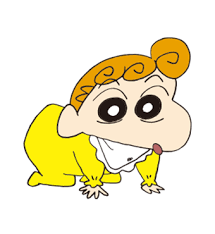
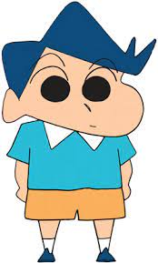
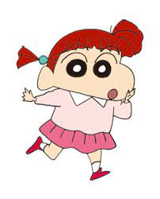
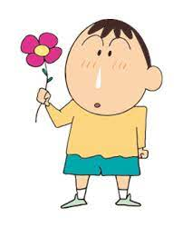

2차원 변형
좌우로 움직이기
상하로 움직이기

대각선 움직이기

가로 방향 확대/축소

세로 방향 확대/축소
요소 확대/축소(대각선)

요소 회전
3차원 변형
x, y, z축 이동
x축 회전
x축 회전
z축 회전
x, y, z축 회전
변형 사이에 지연시간 추가하기(transition)
여기가 위쪽
스타일 변형 진행 속도 조정
여기가 위쪽
스타일 변형 딜레이(일정 시간 후 변형)
여기가 위쪽